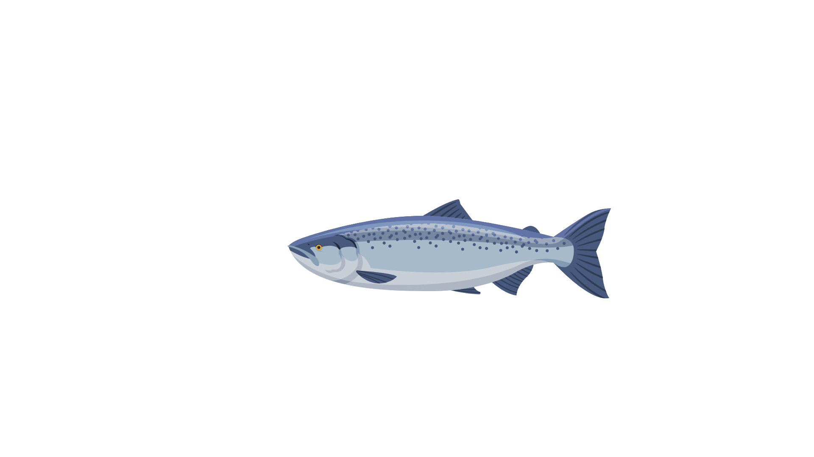

Energi

Inventory

Kayu: 0

Benih: 4
Blueprint: 0
Panel Surya: 0

Ikan: 0
Panduan Permainan
Selamat Datang di Pulau!

Langkah 1: Mengumpulkan Bahan
🌱 Kunjungi Kebun untuk mendapatkan benih dan kayu
✨ Status: Belum Selesai
Membuat Panel Surya dan Rumah

Langkah 2: Kunjungi area Craft
🔧 Crafting Panel Surya dan Rumah
✨ Status: Belum Selesai
Pergi ke halaman kolam ikan

Langkah 3: Mengambil ikan
🌿 Mengambil ikan dari kolam ikan
✨ Status: Belum Selesai
Membuka Kebun 2

Langkah 4: Buka Kebun 2
🌱 Craft Blueprint untuk membuka Kebun 2
✨ Status: Belum Selesai